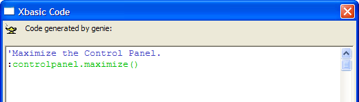
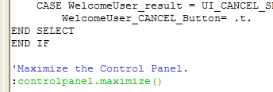
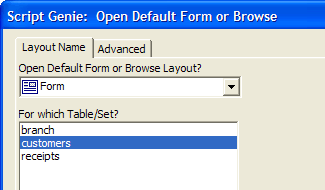
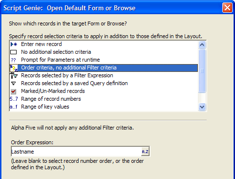
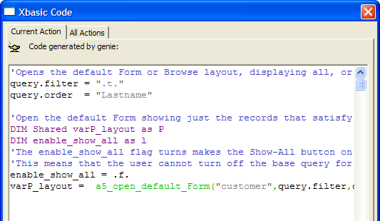
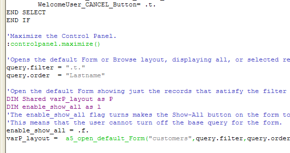

Using an Action Script Genie in the Xbasic Editor
Just because you are in the Xbasic Code Editor does not mean you cannot take advantage of the Action Script Genies. This example shows how to use the Action Script Editor to generate code to paste into an Xbasic script.
Put the insertion point at the end of the script by clicking in the script and pressing CTRL-END.
Press Enter twice to move to a new line.
Click the Xbasic Script Genie button on the toolbar.
The familiar Select Action dialog appears. Select the "Control Panel" category and the "Control Panel Maximize" action.
Click OK. Alpha Anywhere displays the Xbasic code associated with this action.

To insert this code into the script you are editing click the Insert Code in Script Editor button. Alpha Anywhere pastes the code into the script editor at the insertion point. The end of the script now looks like this:

Click the Xbasic Script Genie button again.
Select the "Form/Browse" category and the "Open Default Form or Browse Action".
Click OK.
Select the "customers" table.
Click Next >.

The next page of the Genie appears. Here you can specify selection and sort criteria for the form you are opening. Select the "Order criteria, no additional Filter criteria" option (as we want to show all records, sorted by lastname ).
Enter lastname at the Order Expression prompt.
Click Finish to complete the Action.

Alpha Anywhere shows the Xbasic code corresponding to the action. Click the Insert Code in Script Editor button.

Alpha Anywhere now inserts this code into the current script. The end of the script now looks like this:

As you can see, the Genies used to define Actions in an Action Script are just as useful for Xbasic programmers. Even a seasoned Xbasic programmer can save a lot of time starting out with lines of error-free, well-commented code.